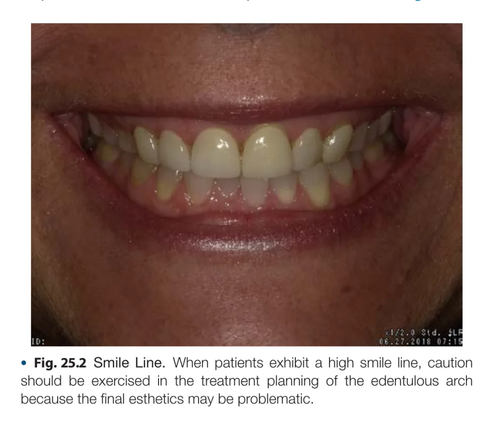
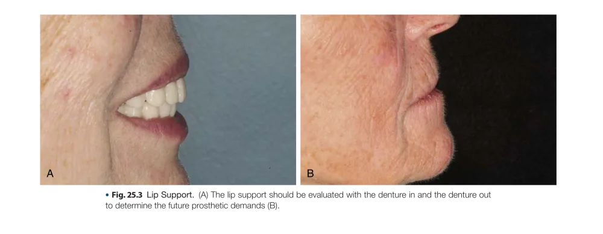

نسخه استخراجشده؛ ترجمه یا تأیید علمی انجام نشده است. وضعیت: captured
نقطهی شروع، یک ادعای بزرگ است:
«در تمام مراحل دندانپزشکی ایمپلنت، طرح درمان ماگزیلای بیدندان پیچیدهترین مورد برای موفقیت درازمدت ایمپلنتها و پروتز است.»
و این ادعا چهار دلیل تاریخی و آناتومیک دارد:
دلیل یکم — تاریخ پژوهش وارونه بود.
«بیشتر مطالعات پژوهشی روی قوسهای بیدندان روی مندیبل انجام شدهاند، چون بیشتر بیماران بیثباتی دنچر مندیبل را در مقایسه با ماگزیلا توصیف میکردند.» یعنی پژوهش به سراغ جایی رفت که بیمار شکایت داشت، نه جایی که مسئله دشوارتر بود.
دلیل دوم — بیماران دیرتر مراجعه میکنند.
«بهطور کلی، بیماران بیشتر احتمال دارد دنچر ماگزیلا را بپوشند تا پروتز بیدندان مندیبل.» و پیامدش این است: «بسیاری از بیماران پیش از جستوجوی درمان در ماگزیلای بیدندان مدتهای طولانیتری صبر میکردند، که به تحلیل گسترده انجامید.»
به این پارادوکس دقت کن: دنچر ماگزیلا بهتر کار میکند، و دقیقاً به همین دلیل بیمار دیرتر میآید و ریج بیشتر تحلیل میرود. موفقیت نسبی پروتز متعارف، بهطور غیرمستقیم شرایط ایمپلنت را بدتر میکند.
دلیل سوم — اصول اشتباه وام گرفته شدند.
«قوس ماگزیلا عمدتاً به این دلیل نرخ موفقیت پایینتری دارد که در گذشته اصول قوس ماگزیلا از همان اصولی پیروی میکرد که در قوس مندیبل به کار میرفت.» — یعنی بخشی از شکست، شکست روش بود نه شکست آناتومی.
دلیل چهارم — الگوی تحلیل، و ساختارهای مجاور.
عدد کلیدی: «بهدلیل الگوی تحلیل ماگزیلا — یعنی تحلیل استخوان افقی دو برابر تحلیل عمودی اندکی پس از کشیدن — ساختارهای آناتومیک مانند حفرهی بینی و سینوس ماگزیلا نقش مهمی در طرح درمان بازی میکنند.»
و جمعبندی این چهار: «بهدلیل شیوع بالای کاهش کمیت و کیفیت استخوان، همراه با خواستهی زیبایی افزوده، قوس ماگزیلا به رویکردهای مفصلتری در طرح درمان — از نظر پروتز ثابت یا متحرک — نیاز دارد.»
و دامنهی تنوع در همین قوس هم بسیار زیاد است: ماگزیلا از استخوان فراوان با بافت چسبنده تا ماگزیلای شدیداً تحلیلرفته با بافت سخت و نرم بهخطرافتاده تغییر میکند. یعنی «ماگزیلای بیدندان» یک تشخیص نیست — یک طیف است.
یک جمله کل رویکرد تشخیصی ماگزیلای بیدندان را میسازد:
«هنگام ارزیابی بیمار برای ایمپلنتهای ماگزیلا، یکی از مهمترین ابزارهای تشخیصی، دنچر موجود بیمار است.»
و پنج چیز را میتوان از آن بهدست آورد: خط لبخند، میزان ساپورت لب، اندازه و شکل دندانها، فضای بینفکی (فضای ارتفاع تاج)، و گیر نسبی پروتز.
عامل یکم — خط لبخند.
لبخند متوسط اجازه میدهد تقریباً ۷۵ تا ۱۰۰ درصد انسیزورهای ماگزیلا و لثهی بیندندانی دیده شود.
و آزمون بالینی در بیمار بیدندان: «پزشک باید مقدار ریجی را که هنگام لبخند بدون دنچر دیده میشود ارزیابی کند.»
و اگر ریج باقیمانده هنگام لبخند دیده شود؟ «طرح درمان برای یک پروتز ایمپلنت ممکن است بسیار چالشبرانگیز باشد.» و در خط لبخند بالا باید احتیاط کرد، چون زیبایی نهایی ممکن است مسئلهساز شود.
عامل دوم — ساپورت لب. و اینجا یک آزمون ساده ولی تعیینکننده هست.
ساپورت لب و بافت نرم از کانتور دندانهای قدامی ماگزیلا و نیز موقعیت ریج باقیمانده میآید. و باید هم با دنچر در دهان و هم بدون آن ارزیابی شود.
و قاعدهی تصمیم: «اگر دنچر موجود بهشدت لب را ساپورت میکند، آنگاه پروتز ثابت ممکن است ایدهآلترین گزینه نباشد — چون بهدست آوردن ساپورت لب از یک پروتز ثابت ماگزیلا اغلب دشوار است.»
و چرا؟ چون «ساپورت بافت نرم عمدتاً از فلنج باکال پروتز ماگزیلا میآید، چرا که تحلیل در ماگزیلا در جهت کرانیال و مدیال پیش میرود.» — و پروتز ثابت فلنج ندارد.
و یک مانور تشخیصی مشخص هست که این تصمیم را از حدس به مشاهده تبدیل میکند:
«پیش از انتخاب نوع پروتز و برای تسهیل تشخیص، فلنج لبیالِ بالای دندانهای ماگزیلای دنچر موجود — یا وکس تِرایاین یک پروتز جدید — میتواند برداشته شود و ظاهر صورتی لب ماگزیلا بدون ساپورت لبیال ارزیابی شود.»
و اهمیتش را از اینجا بفهم: دو مزیت اصلی اوردنچر ایمپلنتی ماگزیلا در مقایسه با پروتز ثابت اینهاست: توانایی فراهم کردن یک فلنج برای ساپورت لب ماگزیلا، و هزینهی کمتر.
پس این مانور یک آزمون واقعی است، نه یک تشریفات: اگر با برداشتن فلنج، لب فرو بریزد، مزیت شمارهیک اوردنچر همان چیزی است که بیمار به آن نیاز دارد — و پروتز ثابت نمیتواند آن را بدهد. اگر لب تغییر محسوسی نکند، این مانع از سر راه پروتز ثابت برداشته شده است.
و یک عامل آناتومیک که تصمیم را سختتر میکند: «بیمار با لب بالای کوتاه به احتمال زیاد دندانهای ماگزیلا را در حالت استراحت نشان میدهد. بنابراین لبهای بالای کوتاه بسیار چالشبرانگیزتر از لبهای بلندند. با لب بالای بلند، بسیار کم یا هیچیک از دندانهای ماگزیلا دیده نمیشود.»
عامل سوم — موقعیت ریج.
«بسته به میزان تحلیل استخوان، ریج باقیمانده معمولاً بهطور معناداری لینگوالتر از موقعیت ایدهآل دندانها در قدام و خلف ماگزیلا قرار دارد.»
و پیامد بیومکانیکیاش دقیقاً همان چیزی است که از یونیت ۳٫۳ میشناسی: وقتی تفاوت میان ریج و موقعیت دندان وجود داشته باشد — مثلاً فرم قوس مربعی با موقعیت دندانی مخروطی — دشواریهای پروتزی معناداری مانند عوامل نیروی قدامی ناشی از اختلاف کانتیلورشده میان ریج و موقعیت دندان میتوانند زمینهساز عوارض شوند.
و چه چیزهایی باید همزمان برآورده شوند؟ چهار چیز: ساپورت کافی لب، فونتیک، تأیید بیمار، و فضای کافی زبان.
عامل چهارم — بافت نرم.
ضخامت و کیفیت بافت نرم باید هم بالینی و هم با CBCT ارزیابی شود. و با تحلیل ریج ماگزیلا: بافت نازک میشود، تراکمش کم میشود، و بافت کراتینیزه از دست میرود.
و در پرهماگزیلای شدیداً تحلیلرفته: «بافت هایپرموبایل میشود، که به ساپورت بسیار اندک برای پروتز میانجامد.»
و یک انتظار که باید همان اول تصحیح شود:
«اغلب بیماران بیدندان ماگزیلا به دنبال یک پروتز ثابت زیبا شبیه دندانهای طبیعی هستند. بنابراین ضروری است بیمار دشواری دستیابی به معماری پاپیلا شبیه وضعیت پیش از کشیدن را درک کند. بازسازی پاپیلا — که به یک پروتز FP-1 (پروتز ثابت با تاج بالینی با اندازهی طبیعی) میانجامد — معمولاً دشوار و در برخی موارد ناممکن است.»

